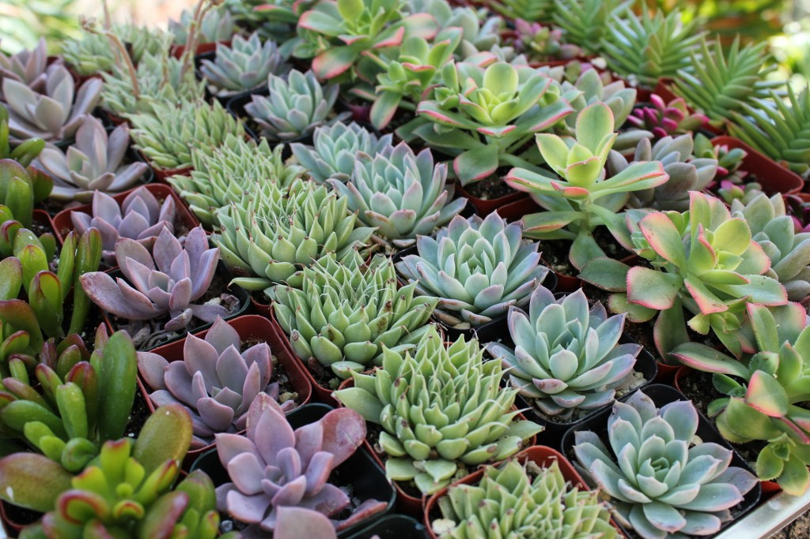

Succulents are special plants with thickened, fleshy parts like stems or leaves that store water, helping them survive in dry areas. The term comes from the Latin word for "juice" or "sap." They can have water content up to 90–95% in certain parts. Succulents thrive in hot, low-rainfall places like deserts but can also grow in rocky alpine areas. They don't form a specific plant group; instead, the term describes their water-retaining features. Some families have many succulent species, while others have few. Succulents, appreciated for their unique appearance, are often grown as ornamental plants, needing minimal care. Importantly, while all cacti are succulents, not all succulents are cacti.
